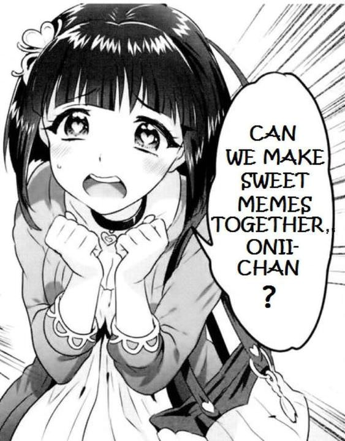

Hey anime lovers, just like you I am completely obsessed with anime. So I created a mini webpage on
anime
(because of my obsession). My webpage include all the anime I recommend you should watch, my favourite
animes, the differnent types of animes, my favourite anime scenes, and lots more. I won't be doing
stuff
like anime history or anything on the creator of animes. If you would like to learn about the history
Click Here.
 Dont worry Sayacha, we have plenty of memes. Hope you all enjoy.
Here is a random flashlight just because I can